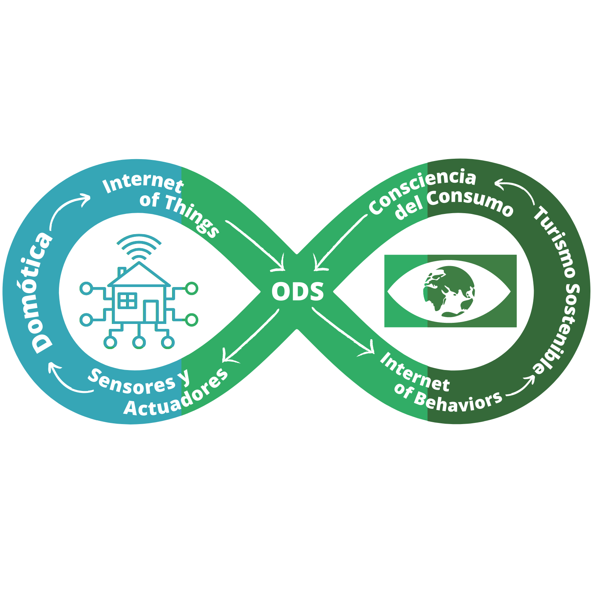

Prácticas Domotización del Aula
Introducción
A continuación, se presenta todo el contenido necesario para realizar las prácticas sobre "Domotización del aula" con la herramienta de Home Assistant. Estas prácticas provienen de la realización de mi Trabajo Fin de Máster para el MAES (UGR).
Estas prácticas consisten en mostrar a alumnos de secundaria el mundo de la domótica, quitándoles el posible "miedo" y mostrándoles lo accesible que puede llegar a ser la domótica.
Aparte de trabajar con la domótica y el Internet of Things (IoT), se busca la reflexión sobre el Internet of Behaviors (IoB), un término no tan conocido: la capacidad que tienen estos dispositivos inteligentes en modificar nuestros comportamientos, ya sea a mejor o a peor.
Además, se presentará la idea del turismo sostenible, juntando el IoT y el IoB para domotizar hoteles y comprobar los hábitos de estudiantes cuando van de vacaciones.
Todo ello viene reflejado en el siguiente logotipo, al que se recurrirá a lo largo de las prácticas:
